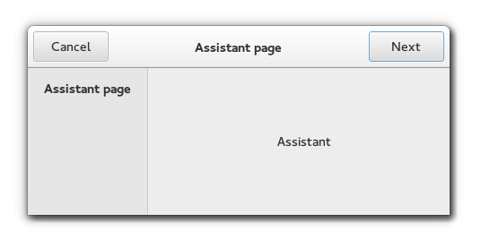

Gtk.Assistant
Example
Methods
| Inherited: | Gtk.Window (117), Gtk.Bin (1), Gtk.Container (27), Gtk.Widget (256), GObject.Object (33), Gtk.Buildable (10) |
|---|
| static | new() |
| add_action_widget(child) | |
| append_page(page) | |
| commit() | |
| get_current_page() | |
| get_n_pages() | |
| get_nth_page(page_num) | |
| get_page_complete(page) | |
| get_page_header_image(page) | |
| get_page_side_image(page) | |
| get_page_title(page) | |
| get_page_type(page) | |
| insert_page(page, position) | |
| next_page() | |
| prepend_page(page) | |
| previous_page() | |
| remove_action_widget(child) | |
| remove_page(page_num) | |
| set_current_page(page_num) | |
| set_forward_page_func(page_func, *data) | |
| set_page_complete(page, complete) | |
| set_page_header_image(page, pixbuf) | |
| set_page_side_image(page, pixbuf) | |
| set_page_title(page, title) | |
| set_page_type(page, type) | |
| update_buttons_state() |
Virtual Methods
| Inherited: | Gtk.Window (5), Gtk.Container (10), Gtk.Widget (82), GObject.Object (7), Gtk.Buildable (10) |
|---|
| do_apply() | |
| do_cancel() | |
| do_close() | |
| do_prepare(page) |
Properties
| Inherited: | Gtk.Window (33), Gtk.Container (3), Gtk.Widget (38) |
|---|
| Name | Type | Flags | Short Description |
|---|---|---|---|
| use-header-bar | int | r/w | Use Header Bar for actions. |
Child Properties
| Name | Type | Default | Flags | Short Description |
|---|---|---|---|---|
| complete | bool | False | r/w | Whether all required fields on the page have been filled out |
| header-image | GdkPixbuf.Pixbuf | None | r/w | Header image for the assistant page |
| page-type | Gtk.AssistantPageType | Gtk.AssistantPageType.CONTENT | r/w | The type of the assistant page |
| sidebar-image | GdkPixbuf.Pixbuf | None | r/w | Sidebar image for the assistant page |
| title | str | None | r/w | The title of the assistant page |
Style Properties
| Inherited: | Gtk.Window (2), Gtk.Widget (17) |
|---|
| Name | Type | Default | Flags | Short Description |
|---|---|---|---|---|
| content-padding | int | 1 | r | Number of pixels around the content pages. |
| header-padding | int | 6 | r | Number of pixels around the header. |
Signals
| Inherited: | Gtk.Window (5), Gtk.Container (4), Gtk.Widget (69), GObject.Object (1) |
|---|
| Name | Short Description |
|---|---|
| apply | The ::apply signal is emitted when the apply button is clicked. |
| cancel | The ::cancel signal is emitted when then the cancel button is clicked. |
| close | The ::close signal is emitted either when the close button of a summary page is clicked, or when the apply button in the last page in the flow (of type Gtk.AssistantPageType.CONFIRM ) is clicked. |
| escape | |
| prepare | The ::prepare signal is emitted when a new page is set as the assistant’s current page, before making the new page visible. |
Fields
| Inherited: | Gtk.Window (1), Gtk.Bin (1), Gtk.Container (1), Gtk.Widget (1), GObject.InitiallyUnowned (3), GObject.Object (3) |
|---|
| Name | Type | Access | Description |
|---|---|---|---|
| parent | Gtk.Window | r |
Class Details
- class Gtk.Assistant(type=<enum TOPLEVEL of type WindowType>, **kwds)
Bases: Gtk.Window
A Gtk.Assistant is a widget used to represent a generally complex operation splitted in several steps, guiding the user through its pages and controlling the page flow to collect the necessary data.
The design of Gtk.Assistant is that it controls what buttons to show and to make sensitive, based on what it knows about the page sequence and the [type][GtkAssistantPageType] of each page, in addition to state information like the page [completion][gtk-assistant-set-page-complete] and [committed][gtk-assistant-commit] status.
If you have a case that doesn’t quite fit in Gtk.Assistants way of handling buttons, you can use the Gtk.AssistantPageType.CUSTOM page type and handle buttons yourself.
# Gtk.Assistant as Gtk.Buildable
The Gtk.Assistant implementation of the Gtk.Buildable interface exposes the action_area as internal children with the name “action_area”.
To add pages to an assistant in Gtk.Builder, simply add it as a child to the Gtk.Assistant object, and set its child properties as necessary.
- static new()
Returns: a newly created Gtk.Assistant Return type: Gtk.Widget Creates a new Gtk.Assistant.
New in version 2.10.
- add_action_widget(child)
Parameters: child (Gtk.Widget) – a Gtk.Widget Adds a widget to the action area of a Gtk.Assistant.
New in version 2.10.
- append_page(page)
Parameters: page (Gtk.Widget) – a Gtk.Widget Returns: the index (starting at 0) of the inserted page Return type: int Appends a page to the assistant.
New in version 2.10.
- commit()
Erases the visited page history so the back button is not shown on the current page, and removes the cancel button from subsequent pages.
Use this when the information provided up to the current page is hereafter deemed permanent and cannot be modified or undone. For example, showing a progress page to track a long-running, unreversible operation after the user has clicked apply on a confirmation page.
New in version 2.22.
- get_current_page()
Returns: The index (starting from 0) of the current page in the assistant, or -1 if the assistant has no pages, or no current page. Return type: int Returns the page number of the current page.
New in version 2.10.
- get_n_pages()
Returns: the number of pages in the assistant Return type: int Returns the number of pages in the assistant
New in version 2.10.
- get_nth_page(page_num)
Parameters: page_num (int) – the index of a page in the assistant, or -1 to get the last page Returns: the child widget, or None if page_num is out of bounds Return type: Gtk.Widget Returns the child widget contained in page number page_num.
New in version 2.10.
- get_page_complete(page)
Parameters: page (Gtk.Widget) – a page of assistant Returns: True if page is complete. Return type: bool Gets whether page is complete.
New in version 2.10.
- get_page_header_image(page)
Parameters: page (Gtk.Widget) – a page of assistant Returns: the header image for page, or None if there’s no header image for the page Return type: GdkPixbuf.Pixbuf Gets the header image for page.
New in version 2.10.
Deprecated since version 3.2: Since GTK+ 3.2, a header is no longer shown; add your header decoration to the page content instead.
- get_page_side_image(page)
Parameters: page (Gtk.Widget) – a page of assistant Returns: the side image for page, or None if there’s no side image for the page Return type: GdkPixbuf.Pixbuf Gets the side image for page.
New in version 2.10.
Deprecated since version 3.2: Since GTK+ 3.2, sidebar images are not shown anymore.
- get_page_title(page)
Parameters: page (Gtk.Widget) – a page of assistant Returns: the title for page Return type: str Gets the title for page.
New in version 2.10.
- get_page_type(page)
Parameters: page (Gtk.Widget) – a page of assistant Returns: the page type of page Return type: Gtk.AssistantPageType Gets the page type of page.
New in version 2.10.
- insert_page(page, position)
Parameters: - page (Gtk.Widget) – a Gtk.Widget
- position (int) – the index (starting at 0) at which to insert the page, or -1 to append the page to the assistant
Returns: the index (starting from 0) of the inserted page
Return type: Inserts a page in the assistant at a given position.
New in version 2.10.
- next_page()
Navigate to the next page.
It is a programming error to call this function when there is no next page.
This function is for use when creating pages of the Gtk.AssistantPageType.CUSTOM type.
New in version 3.0.
- prepend_page(page)
Parameters: page (Gtk.Widget) – a Gtk.Widget Returns: the index (starting at 0) of the inserted page Return type: int Prepends a page to the assistant.
New in version 2.10.
- previous_page()
Navigate to the previous visited page.
It is a programming error to call this function when no previous page is available.
This function is for use when creating pages of the Gtk.AssistantPageType.CUSTOM type.
New in version 3.0.
- remove_action_widget(child)
Parameters: child (Gtk.Widget) – a Gtk.Widget Removes a widget from the action area of a Gtk.Assistant.
New in version 2.10.
- remove_page(page_num)
Parameters: page_num (int) – the index of a page in the assistant, or -1 to remove the last page Removes the page_num ’s page from assistant.
New in version 3.2.
- set_current_page(page_num)
Parameters: page_num (int) – index of the page to switch to, starting from 0. If negative, the last page will be used. If greater than the number of pages in the assistant, nothing will be done. Switches the page to page_num.
Note that this will only be necessary in custom buttons, as the assistant flow can be set with Gtk.Assistant.set_forward_page_func ().
New in version 2.10.
- set_forward_page_func(page_func, *data)
Parameters: - page_func (Gtk.AssistantPageFunc or None) – the Gtk.AssistantPageFunc, or None to use the default one
- data (object) – user data for page_func
Sets the page forwarding function to be page_func.
This function will be used to determine what will be the next page when the user presses the forward button. Setting page_func to None will make the assistant to use the default forward function, which just goes to the next visible page.
New in version 2.10.
- set_page_complete(page, complete)
Parameters: - page (Gtk.Widget) – a page of assistant
- complete (bool) – the completeness status of the page
Sets whether page contents are complete.
This will make assistant update the buttons state to be able to continue the task.
New in version 2.10.
- set_page_header_image(page, pixbuf)
Parameters: - page (Gtk.Widget) – a page of assistant
- pixbuf (GdkPixbuf.Pixbuf or None) – the new header image page
Sets a header image for page.
New in version 2.10.
Deprecated since version 3.2: Since GTK+ 3.2, a header is no longer shown; add your header decoration to the page content instead.
- set_page_side_image(page, pixbuf)
Parameters: - page (Gtk.Widget) – a page of assistant
- pixbuf (GdkPixbuf.Pixbuf or None) – the new side image page
Sets a side image for page.
This image used to be displayed in the side area of the assistant when page is the current page.
New in version 2.10.
Deprecated since version 3.2: Since GTK+ 3.2, sidebar images are not shown anymore.
- set_page_title(page, title)
Parameters: - page (Gtk.Widget) – a page of assistant
- title (str) – the new title for page
Sets a title for page.
The title is displayed in the header area of the assistant when page is the current page.
New in version 2.10.
- set_page_type(page, type)
Parameters: - page (Gtk.Widget) – a page of assistant
- type (Gtk.AssistantPageType) – the new type for page
Sets the page type for page.
The page type determines the page behavior in the assistant.
New in version 2.10.
Forces assistant to recompute the buttons state.
GTK+ automatically takes care of this in most situations, e.g. when the user goes to a different page, or when the visibility or completeness of a page changes.
One situation where it can be necessary to call this function is when changing a value on the current page affects the future page flow of the assistant.
New in version 2.10.
- do_apply()
Type: virtual
- do_cancel()
Type: virtual
- do_close()
Type: virtual
- do_prepare(page)
Type: virtual Parameters: page (Gtk.Widget) –
Signal Details
- Gtk.Assistant.signals.apply(assistant)
Signal Name: apply Flags: RUN_LAST Parameters: assistant (Gtk.Assistant) – The object which received the signal The ::apply signal is emitted when the apply button is clicked.
The default behavior of the Gtk.Assistant is to switch to the page after the current page, unless the current page is the last one.
A handler for the ::apply signal should carry out the actions for which the wizard has collected data. If the action takes a long time to complete, you might consider putting a page of type Gtk.AssistantPageType.PROGRESS after the confirmation page and handle this operation within the Gtk.Assistant ::prepare signal of the progress page.
New in version 2.10.
- Gtk.Assistant.signals.cancel(assistant)
Signal Name: cancel Flags: RUN_LAST Parameters: assistant (Gtk.Assistant) – The object which received the signal The ::cancel signal is emitted when then the cancel button is clicked.
New in version 2.10.
- Gtk.Assistant.signals.close(assistant)
Signal Name: close Flags: RUN_LAST Parameters: assistant (Gtk.Assistant) – The object which received the signal The ::close signal is emitted either when the close button of a summary page is clicked, or when the apply button in the last page in the flow (of type Gtk.AssistantPageType.CONFIRM ) is clicked.
New in version 2.10.
- Gtk.Assistant.signals.escape(assistant)
Signal Name: escape Flags: ACTION, RUN_FIRST Parameters: assistant (Gtk.Assistant) – The object which received the signal
- Gtk.Assistant.signals.prepare(assistant, page)
Signal Name: prepare
Flags: Parameters: - assistant (Gtk.Assistant) – The object which received the signal
- page (Gtk.Widget) – the current page
The ::prepare signal is emitted when a new page is set as the assistant’s current page, before making the new page visible.
A handler for this signal can do any preparations which are necessary before showing page.
New in version 2.10.
Property Details
- Gtk.Assistant.props.use_header_bar
Name: use-header-bar Type: int Default Value: -1 Flags: r/w True if the assistant uses a Gtk.HeaderBar for action buttons instead of the action-area.
For technical reasons, this property is declared as an integer property, but you should only set it to True or False.
New in version 3.12.